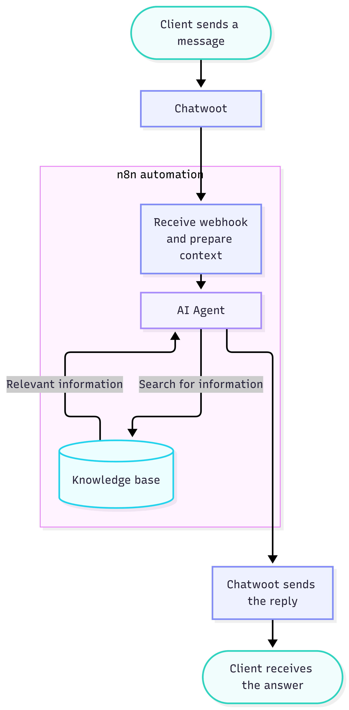

01 · Conversational assistant
A chatbot integrated into the company website
Experience: Propitech · BILP
The need
Give website visitors quick access to company information while defining the topics the assistant can answer about.
My approach
I orchestrated the exchanges with n8n, compared Slack and Chatwoot as messaging channels, and gathered useful information from several sources, including the website and Nextcloud. Preparing the knowledge base and agent instructions helped define its scope. I also developed a custom plugin for the SPIP CMS.
After comparing the options, Chatwoot was selected because Slack was less suited to the website integration requirements.
Outcome
The chatbot is live on sundiy.fr. Project measurements indicated around 92% correct answers and an average response time of 1.2 seconds.
n8nChatwootSPIPPHPAI agent
